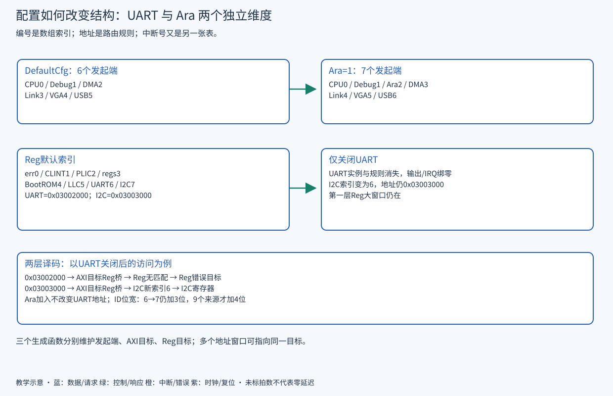

READ · TRACE · BUILD · EXPLAIN
H03 · SoC 配置与互连结构生成
从三个生成函数，推导端口编号、地址规则和访问路径。
手算 UART 关闭、Ara 开启、外部端口增加和 LLC 旁路的结构差异。
前置：H01、H02；理解发起者与目标。证据：2026-09-23，源码基准 ae2b69fe0；原理推导与源码静态确认，动态证据另见硬件实验与证据。
SoC 端口与地址规则生成
gen_axi_in按启用顺序给发起者分配索引；gen_axi_out生成 AXI 目标和地址规则；gen_reg_out生成 Regbus 目标和规则。它们返回结构体，顶层据此创建数组、实例和连接。一条地址规则对应一个窗口，多个窗口可以通向同一物理目标，因此规则数不等于端口数。

默认与 Ara 配置的发起端和 ID 宽度
| 发起者 | DefaultCfg | Ara=1 |
|---|---|---|
| CPU / Debug | 0 / 1 | 0 / 1 |
| Ara | 不分配 | 2 |
| DMA / Link / VGA / USB | 2 / 3 / 4 / 5 | 3 / 4 / 5 / 6 |
| 数量（没有外部 master） | 6 | 7 |
| crossbar 目标侧 ID 宽 | 2+ceil(log2(6))=5 | 2+ceil(log2(7))=5 |
这里的 5 位是 crossbar 目标侧 AxiSlvIdWidth，不是 CPU 原始 AXI ID，也不是 LLC 最终外部输出 ID。若在 Ara 组合再加 2 个外部 master，数量变为 9，才增加到 6 位。源代码中的 mst/slv 命名要从模块端口视角读：CPU 发起者接 crossbar 的 slave port。
UART 裁切的索引与地址变化
默认 Reg 目标前几项是 err=0、clint=1、plic=2、regs=3、bootrom=4、llc=5、uart=6、i2c=7、spi=8、gpio=9。关闭 UART 后 I2C 变为索引 6，但仍映射 0x03003000；UART 的 [0x03002000,0x03003000) 规则消失。大窗口 [0x02000000,0x0c000000) 仍会把请求送到 Reg 桥，第二层未匹配再走 Reg 错误目标。不是所有不存在的地址都在第一层报 DECERR。
GPIO 等内部中断源来自固定结构打包，不应推断成“Reg 索引减一，中断号也减一”。还要核对 UART 引脚绑零、驱动仍否调用 printf，以及 FPGA IO 宏是否改变。Cfg.Uart 与 USE_UART 属于不同层。
LLC 结构分支与配置约束
| LlcOutConnect / LlcNotBypass | 顶层分支 | 需要解释的后果 |
|---|---|---|
| 1 / 1 | gen_llc | LLC 存在，缓存/非缓存 SPM 别名指向该目标，运行时决定 way 用途 |
| 1 / 0 | gen_llc_bypass | 外部输出保留，内部 LLC/SPM 规则消失；Boot ROM 和栈前提需重新安排 |
| 0 / 0 | gen_llc_stubout | 默认主存输出不存在；有意使用该组合需由其他端口提供存储与启动方案 |
| 0 / 1 | 存在配置不一致风险 | 不要使用。地址生成仍会处理 SPM/LLC 控制规则而实际 LLC 不实例化；源码仍有相关 TODO |
默认容量 = 8 ways × 256 lines × 8 blocks × 64/8 B = 128 KiB。单改 AXI 数据宽度也会进入这个公式，不能认为“只把总线变宽”。关闭 LLC 不会删除 CVA6 的 L1，也不自动解决 DMA 一致性。
扩展端口与软件接口联动
- 发起者表：新增 AxiExtNumMst 是否改变 ID 宽、AXI RT 生成规模、AMO USER 来源编码。
- 目标表：AxiExtNumSlv 与 RegExtNumSlv 控制物理端口，NumRules 控制窗口数；外部 Reg 规则还要进入第一层 AXI 规则。
- 软件表：驱动基地址、可缓存/可执行属性、IRQ、链接脚本与模型范围是否一致。
顶层存在参数一致性 TODO。NumCores 能参与循环不等于任意多核组合可用；当前 Ara+多核有明确报错，PLIC/CLINT 尺寸及共享加速器连接也需单独验收。
源码阅读与验证练习
工作目录：仓库根。以下为只读练习，工具 Python 3 / rg；终端输出即产物，可复制到个人学习记录。通常数秒完成，超过 10 秒可中止检查路径；不启动 SoC 仿真。
python3 docs_codex/learning/scripts/hardware_lab.py topology --scenario default
python3 docs_codex/learning/scripts/hardware_lab.py topology --scenario no-uart
python3 docs_codex/learning/scripts/hardware_lab.py topology --scenario ara-ext2
rg -n "gen_axi_in|gen_axi_out|gen_reg_out|AxiSlvIdWidth" hw/cheshire_pkg.sv hw/cheshire_soc.sv成功判据：手算与模型表一致，并在实际函数中找到增量原因。模型只覆盖单核教学场景，不是通用 SV 求值器。若源码快照校验失败，先重审脚本假设，禁止把旧表当当前硬件。
源码依据
本章自测
UART 关闭后 I2C 基地址为什么没变？
地址常量和端口索引分别生成；索引压紧，地址规则仍填同一常量。
Ara 打开为什么 ID 没立刻变宽？
6 和 7 个来源都需要 3 位来源编号，只有越过 8 才需 4 位。
Reg 外设只在第二层加规则够吗？
若地址超出原有第一层大窗口，还需第一层能路由到 Reg 桥；当前外部 Reg 规则由 gen_axi_out 同时添加。